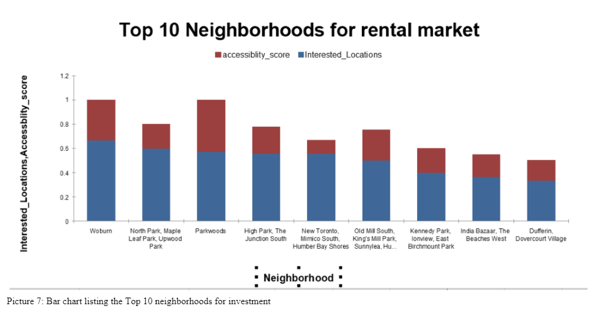

Portfolio
An insight into airbnb popular vacation destinations
Email Marketing Analysis with Power BI
Global Store Analysis with Power BI
Search of Better Rental Investment in Toronto - Data Science Project
In search of G.O.A.T - Jordon Vs Lebron

Data Evangelist
An insight into airbnb popular vacation destinations
Email Marketing Analysis with Power BI
Global Store Analysis with Power BI
Search of Better Rental Investment in Toronto - Data Science Project
In search of G.O.A.T - Jordon Vs Lebron
We live in a data rich, data driven world. Data is revolutionizing business in ways we never conceived. So much of what we do is being recorded and stored somewhere. Companies big and small, across all sectors, are using data to understand their customers better.
"The goal is to turn data into information, and information into insight"
Hello! Welcome to my Data Journal, Certified Data Analyst proficient in interpreting and presenting insights with clarity. Data is helping with better nurturing and improved customer experiences. The insights gained from analyzing data is helping organizations identify new growth areas and product ideas , streamline costs, increase operating margins, make better human resource decisions, effective budgets; Thus Endless Opportunities...And My goal is to Explore the universe of Data, learn along the way and contribute value with gained insights.
Out of all marketing strategies, Email campaigning is the most popular one in current ecommerce era. Email campaign is preferred because of its easy measurability. Also, Market Researchers have indicated that Email Marketing delivers an whooping ROI of $44 for every $1 spent; thus making email campaigning one of the most affordable marketing tactic.Analysts track various metrics in Campaigns based on goal of campaign . Traditionally, metrics chosen will answer the questions like How many users opened and clicked the email ? How many used the link in the email and if multiple which link is clicked most ? Which region do the interested user belong to ? If there is any rise in customer numbers after campaign. ? If the sales have changed following campaign and many more.Common metrics in Email analytics include :
There could be others like conversion rate, List growth Rate, Email Sharing Rate, unsubscribe Rate and specific custom measurables if any depending on the campaign objective.
New Company XYZ has conducted an campaign analysis sharing information about the company to a list of recipients. These recipients are obtained from a mail server and none of the email ids are validated. The email sent is first of the several marketing emails that will be sent in future. Hence company XYZ wants analyse the email campaign and further refine the future target recipients.
A . Data preparation
Raw campaign data in csv is obtained from source . Data transformations are made in Power query before loading to Power BI. Some of the transformations are:
B. Data Model
Created relationship between two source tables.
C. Create Visualization in Power BI Desktop
D. Insights
The insights derived from the report will enable taking right measures to improve the future campaigns for company.
Assumptions
Source data is a sample from internet and the results cannot be verified or considered as fact. This is for purpose of presentation only
With increase in availability of internet, global shopping has become the trend. Thanks to once upon a time 'out of the box' advents like amazon, eBay, flipkart and hundreds more; people now have purchase options available from different parts of the world at a click away.
As the wise saying goes 'Only things that are measured can be managed' , there is an absolute necessity to study the current sales, record them, analyse and create a hypothesis which will answer the business questions related to present as well as aid in predicting future. In Global retail scenario , the major KPI metric is 'Profit percentage'.
Company 'StoreZ' is a global store that has operations in several cities in different countries. They require a overall analytical report informing the total sales , profit and profit percentages, Locations with top sales, Top products sold and Products returned . They want to see this for the period of 4 years and forecast the sales profit for next year.
A . Data preparation
Raw source data was available in various files. Data transformations were made in Power query before loading to Power BI. Some of the transformation examples are-
B. Data Model
Created relationship between source tables.
C. Create Visualization in Power BI Desktop
D. Insights
The insights derived from the report will enable taking right measures to improve the future sales and customer success for company.
Assumptions
Source data is a sample from internet and the results cannot be verified or considered as fact. This is for purpose of presentation only
Preface
The below Data analysis project is developed as a part of IBM Data Science Capstone project. This is a final project of a 9-course professional certificate that aimed at providing intermediate knowledge of Data Science. The scope of the project is to frame a business question around any city in the world, use the public data available for the city. Transform the data as required and further must utilize Foursquare client /API to explore the various location data in the selected city to answer the Business query.Foursquare client API is a social location service that provides real time access to foursquare client global database. The database has rich information about venue and user ratings.
For my project, I have created a hypothetical business query for Toronto city below as suggested in the course. I will be getting all the relevant neighborhood data from public datasets, Transform and prepare this data to further explore and understand the city's neighborhoods to answer my business questions.
Understanding the Business
Introduction
Toronto is not only the financial hub and largest populated city of Canada; it is also one of cities which is vouched for real estate investments in the world. Toronto real-estate market rise around 20% every year. Many large builders and also mid-sized investors prefer to set up their real estate businesses in neighborhoods of Toronto.
One of the most popular investment strategies for mid- size and small investors is to buy residential properties and rent out. In last few years Toronto real estate market has seen sharp uprise and is highly inflated. Investing on rental properties in such volatile market can be risky and tricky at the same time.
The choice of neighborhood is critical as it can impact the demand and also timeline as in how quick the property is occupied. The Return on Investment depends on these two factors. It is observed that in some of the popular neighborhoods, buying homes prove economical than renting. With low mortgage interest rate and low-down payments, Residents prefer to pay Mortgage interests rather than paying rent and own the property after amortization period.
In such scenario, the best bet would be on temporary residents like students, temporary workers or trainees. The probability of this group of people renting home is more than buying. Hence investing in residential rentals in the neighborhoods with large and popular academic institutions make sense.
Requirement
Mr. A is a mid-size real estate investor and is looking to invest in residential properties to rent in Toronto. He is mainly looking into single family homes or Condo properties. From his experience he suggests that temporary tenants prefer economical condos or small houses in main city rather than extended outskirts with well-connected public transit. He thinks such tenants prefers comfortable and maintainable small spaces in busy hub over big luxurious homes in nature rich outskirts. But at the same time, they would look for easy accessibility to places and nearness to their university or schools for their children. He wants us the Data scientists' team, to explore various neighborhoods of Toronto city and suggest which neighborhood is more suitable for his type of investment.
The main concern of Mr. A is that, the properties that he would invest on should not be vacant for more than 3 months any time of the year. Also, he prefers tenants who don't live more than 3-4 years in a stretch in same property. He believes in carrying out maintenance changes himself every few years. With tenants living in property, it gets difficult for him. With this given criterion from Mr. A, we would target neighborhoods with universities and school districts. Most of the temporary tenants are either university/college students or single families who come to city for work purposes. Such population would prefer to live near their locations of interest and be well connected even without their own travel options.
Analytic Approach
From our business understanding, we can summarize our business query to below questions.
To answer the above queries our approach would be as below:
In the entire Data analysis process, we plan to use python and pandas for retrieving and preparing the dataset. For clustering we will be using popular k-means algorithm. For generating visualization maps we will use Folium. Also, we are using Four square API (public location service) to get the venues.
Data Requirements and Collection technique
As our Business intends to search the rental properties only in and around neighborhoods having Universities and schools with some options of public transit, we have used only below categories of venues from Foursquare venue categories list to keep the data limited to our specification.
| CategoriesId | Venue Categories |
|---|---|
| 4d4b7105d754a06372d81259 | college and university |
| 4bf58dd8d48988d13b941735 | school |
| 4bf58dd8d48988d1ed931735 | airport |
| 52f2ab2ebcbc57f1066b8b4f | busstop |
| 4bf58dd8d48988d129951735 | Train station |
| 52f2ab2ebcbc57f1066b8b51 | Tram station |
Note: These are main categories. This also includes several subcategories which will be filtered out later based on our requirement
Methodology
A. Preparing the Data for Analysis
This section involves information on how we prepared our data source for analysis.
B. Clustering the dataset
C. Analysis of Clusters
Results
As a result of our Data analysis, we have shortlisted 31 neighborhoods for our client. Below represents the bar chart of top 10 neighborhoods that have many universities/schools or colleges and is also well connected with public transit.
Further we have also created clusters for giving a group of neighborhoods as an option rather than one single neighborhood. This is important because this data analysis has not taken into consideration of availability of properties and their prices into account. From our analysis, we recommend our Business to invest in below mentioned priority:
Discussion
The neighborhoods considered for analysis are limited to Toronto city and includes no suburb information for simplicity of model. This data analysis is carried out solely based on the number of venue categories available from Foursquare. It is not prescribed to recommend the options just based on the calculation of neighborhood and venue dataset.
Data analysis could be significantly improved by considering the average home prices, Expected rent and options like crime rate in that location. Since I could not get the public data on this information, I based my analysis on the available relevant data.
k-means algorithm is most suitable algorithm for clustering in such categorical dataset. However, we did get few outliers even with the best value of k. This could not be avoided in unsupervised model of algorithm. Clusters is not perfectly disjoint in this case as all the records of data belong to similar Venue categories in our requirement. So labelling data is difficult and consists of ambiguity.
Conclusion
Toronto is no doubt a hot market for investing in real estate properties. But as discussed earlier, the neighborhood data should be carefully studied to ensure better Return of Investment. The volatile financial market and fluctuating Bank interest rates just add to the problem. But if invested in right neighborhood for right type of tenant, Business could make huge passive income with significant profits.
References
The above Report was created for Maven Analytics (#jordonvslebronchallenge) challenge. The link is Maven Analytics . I learnt about these challenges from feeds of my professional network.
Team M wants to know who between M Jordon and LeBron J is 'The G.O.A.T' in basketball . Everyone who has even a miniscule knowledge of Basketball knows that 'Magical Jordan' for many fans is 'God father' of basketball. He transcended the game in times when other games like Soccer etc. were ruling. Many of the moves invented by Jordon are still popular. LeBron on the other hand is one of the most celebrated star player of today's generation.
Team M had provided 4 datasets that represented game information of Jordan's career , Jordan's playoff , Lebron's career and Lebron Playoff. And , also presented the questions that they wanted our analysis and visualization should answer. The questions were as below .
Data preparation
Data Model
Created relationship between calendar and data_complete tables. data_complete is my combined dataset.
Create Visualization
Insights
Assumptions
It was a very close call, metric numbers are very near. Hence the comparison cannot be concluded as one sided. Also, an assumption is being made here that both greats are from same era and have same sport facilities. We have to agree that in recent times sports analytics have grown multiple times. Sports forms critical component of entertainment economy . Hence lots of investments being made to provide addition assistance to sportsmen to perform better . Jordan would have not got these aids as compared to Lebron. Hence , we can declare both as G.O.A.T of their times.
For me, Jordon is beyond just a Sports champion. He is a role model who inspires.
"I can accept failure, everyone fails at something. But I can't accept not trying."
The above Report was created for Maven Analytics (#mavenvacationchallenge) challenge. The link is Maven Analytics .This is the second Maven challenge that I participated. Definitely one of the best ones where I am getting to observe and learn from work of other participants and further improve my analytics.
Airbnb data for 250,000+ listings in 10 major cities, including information about hosts, pricing, location, and room type, along with over 5 million historical reviews is provided.
After cleaning the raw data and analysing, I realized the dashboard could be created to cater different audiences Travelers, Hosts or airbnb itself. Because the challenge talked about vacation, I deceided to create a explanotary dashboard for general travelers who would be prospective airbnb future guests. I used Power BI for mining as well as Visualizations.
We had airbnb data spanning from 2008 to 2021 for the 10 most popular travel destinations in the world. We had informations related to airbnb property listings as well as review data from past guests.Some of the major insights from my analysis includes :